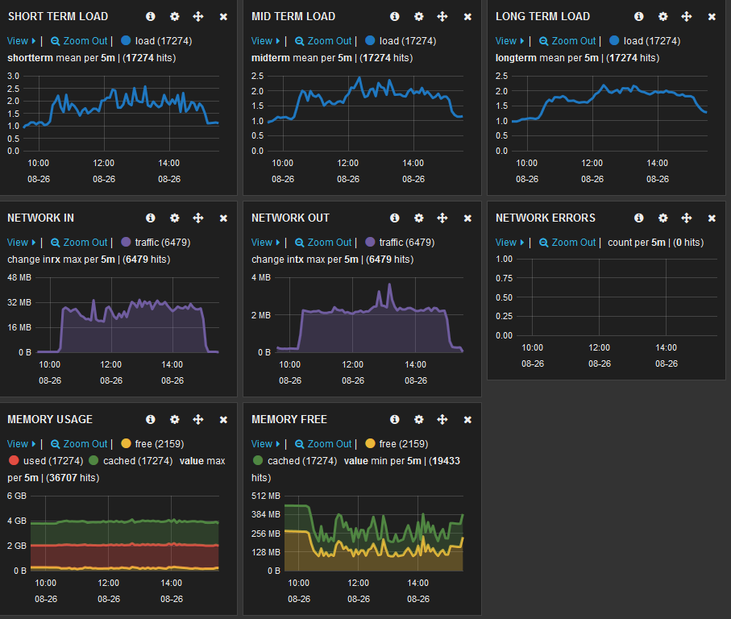
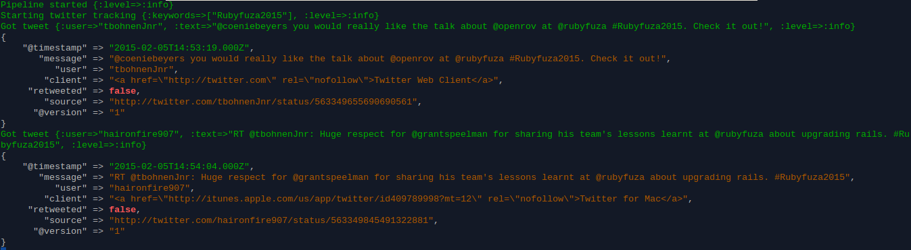

Everything's Connected
Hacking the interwebs with Logstash
What is Logstash
- The L in the ELK Stack
- Ruby project running on the JRuby engine
- Event / Log processing
- PubSub on Steroids
Basic Usage
- Log processing
- From files and other sources
- Parse it for relevant data, make it structured
- Output to Elasticsearch
- Key component in making measurable data available through the ELK stack
Parsing Logs
- Input: MSSQL / Redis
- Filter: XML
- Output: ElasticSearch
Spot the odd one out
- IFTTT
- Zapier
- Stamplay
- Logstash
Why is this significant
- Tons if inputs and outputs
- Make anything searchable / storable
- Connect Anything
- SNS with XMPP / RabbitMQ
- IMAP with S3
- Websocket -> Process / Filter -> Websocket
CollectD => ElasticSearch

All the Tweets

All the Tweets: Config
input {
twitter {
keywords => [ "Rubyfuza2015" ]
consumer_key => "c_key"
consumer_secret => "c_secret"
oauth_token => "o_t"
oauth_token_secret => "o_t_s"
}
}
filter {
}
output {
stdout {
codec => "rubydebug"
}
}
All the Tweets: Result
